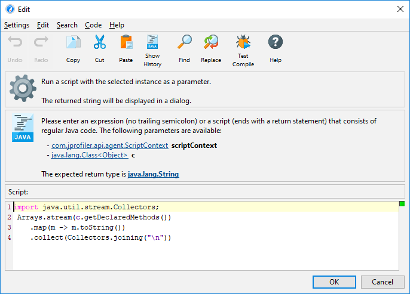

When looking for objects of interest in the heap walker, you often arrive at an object set that has too many instances of the same class in it. To further trim the object set according to your particular focus, the selection criteria could then involve their properties or references. For example, you may be interested in HTTP session objects that contain a particular attribute. In the merged outgoing reference view of the heap walker you can perform selection steps that involve chains of references for the entire object set.
However, the outgoing references view where you see individual objects offers much more powerful functionality to make selection steps that constrain references and primitive fields.
When you select a top-level object, a primitive value or a reference in the outgoing references view, the Apply Filter->By Restricting The Selected Value action becomes enabled. Depending on the selection, the filter value dialog offers different options. Whatever options you configure, you always implicitly add the constraint that objects in the new object set must have outgoing reference chains like the selected one. Filters always work on the top-level objects by restricting the current set of objects into a possibly smaller set.
Constraining primitive values works in both HPROF and JProfiler heap snapshots. For reference types,
you can ask JProfiler to filter non-null values, null values, and values of a selected class. Filtering
by the result of the toString() method is only available in live sessions, except for
java.lang.String and java.lang.Class objects where JProfiler can figure this
out by itself.
The most powerful filter type is the code filter snippet. In the script editor, you have access to the object or reference and can write an expression or script whose boolean return value decides whether an instance should be retained in the current object set or not.
Of course this feature can only work for live sessions, because JProfiler needs access to the live objects. Another consideration is that an object may have been garbage collected since the heap snapshot was taken. In that case, such an object would not be included in the new object set when a code snippet filter is executed.
Apart from filters, there are two other features in the outgoing references view for interacting
with individual objects: The Show toString() Values action invokes the toString() method
on all objects that are currently visible in the view and shows them directly in the reference nodes.
The nodes can become very long and the text may be cut off. Using the Show Node Details action from the
context menu helps you to see the entire text.
A more general method of obtaining information from an object than calling the toString()
method is to run an arbitrary script that returns a string. The Run Script action next to the
Show toString() Values action allows you to do that when a top-level object or a reference is selected.
The result of the script execution is displayed in a separate dialog.
